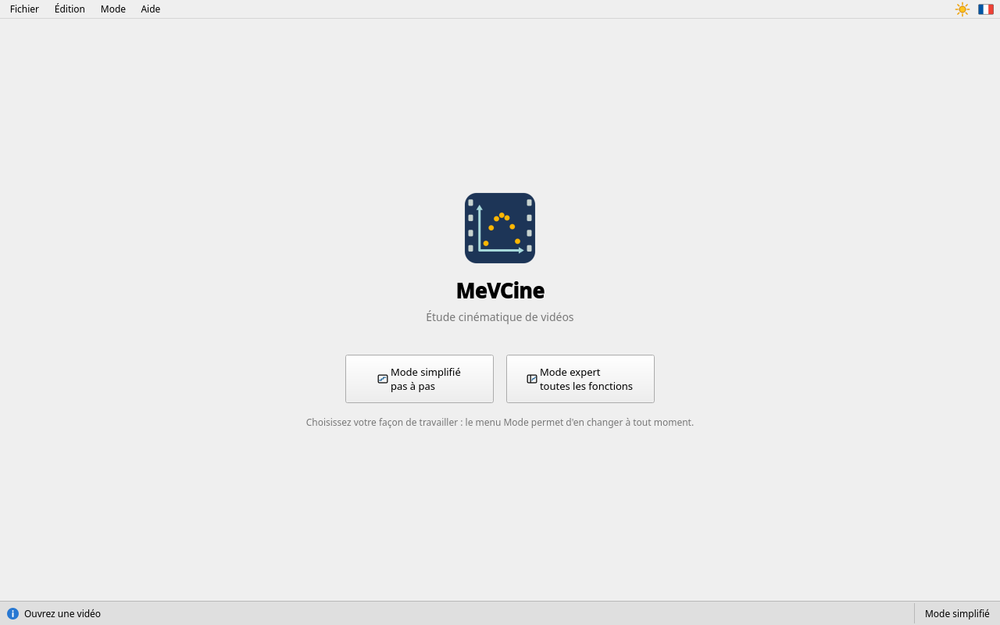
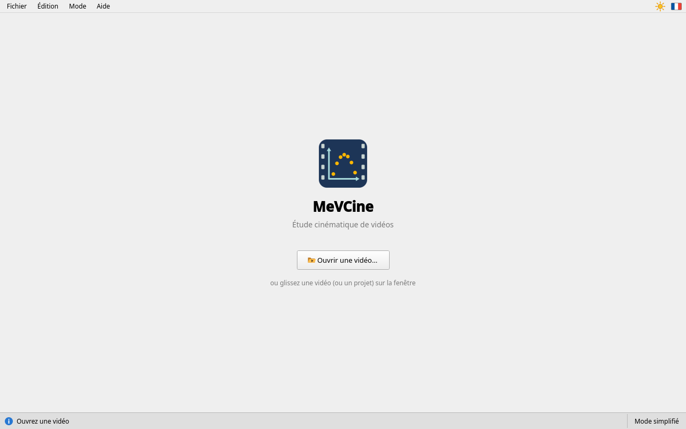

Démarrer
Choisir un mode, ouvrir le film et retrouver un projet
Premier lancement
Ouvrez MeVCine, puis choisissez Mode simplifié (pas à pas) pour un premier pointage. Mode expert ouvre directement les outils de suivi et d’analyse. Aux lancements suivants, MeVCine reprend le dernier mode utilisé.


Ouvrir sa vidéo
Pour une nouvelle séance, choisissez Ouvrir une vidéo… (Ctrl+O) ou déposez le film dans la fenêtre. Pour reprendre un travail enregistré, ouvrez directement son projet.
Une fois la première image affichée, vérifiez le nom du film et sa cadence en bas de la fenêtre. Parcourez quelques images pour repérer le début du mouvement et la règle. Si la vidéo est couchée, tournez-la avant l’étalonnage. Pour un film au ralenti, retrouvez la cadence de prise de vue.


Changer de mode
Ouvrez Mode. La coche indique le mode actif. Les mesures et le repère sont communs aux deux modes, y compris pour un projet commencé avec plusieurs objets.
Reprendre le travail
Placez le film et le fichier .mevcine dans le même dossier. Ouvrez le projet par Fichier › Ouvrir un projet… ou déposez-le dans la fenêtre. À la réouverture, contrôlez une coordonnée déjà relevée et l’unité de sa colonne.
MeVCine vérifie le film à l’emplacement enregistré puis cherche une copie de même nom à côté du projet. S’il vous invite à choisir un fichier, indiquez le film d’origine. Après une fermeture imprévue, utilisez Fichier › Récupérer le travail précédent… et repérez la séance par la vidéo et la date.
Se repérer dans les menus
Fichier regroupe les ouvertures, les sauvegardes et les exports. Édition sert à corriger ou recommencer. Mode choisit l’interface. Aide ouvre la notice et les informations sur le logiciel. Retrouvez les quatre menus illustrés et le rôle de chaque icône.
Le soleil ou la lune change le thème. Le drapeau change la langue. F1 ouvre la page d’aide correspondant à votre travail.
Quitter
Enregistrez le projet avec Ctrl+S. Fermez ensuite la fenêtre ou choisissez Fichier › Quitter. Si un message signale des modifications à garder, cliquez sur Annuler pour revenir au projet et l’enregistrer.